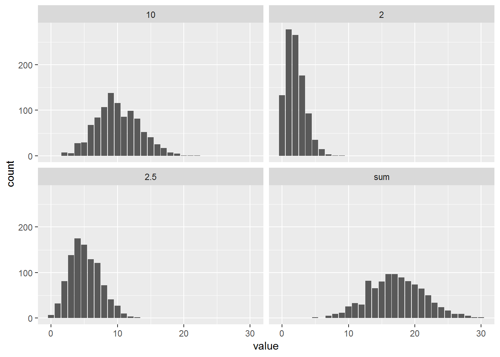
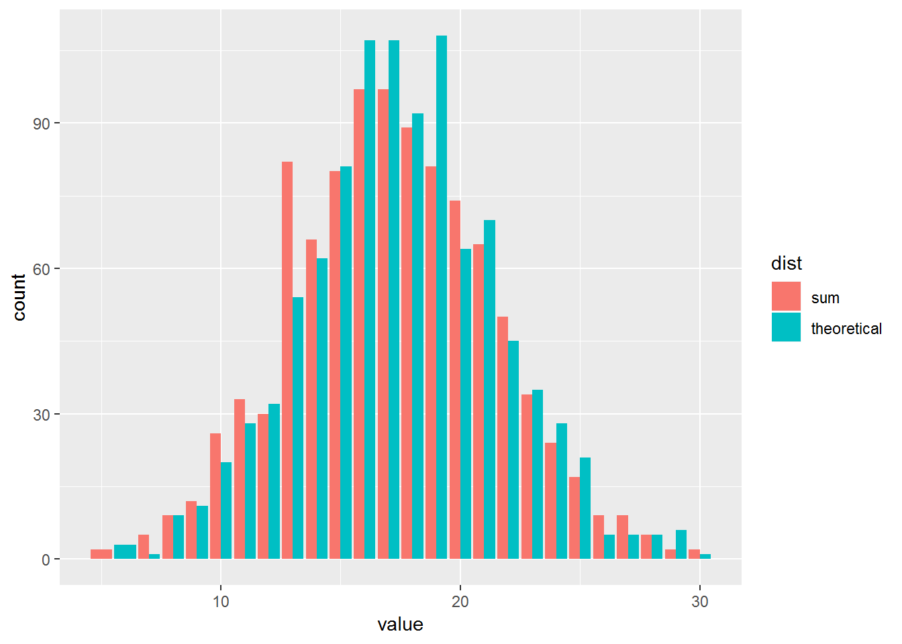
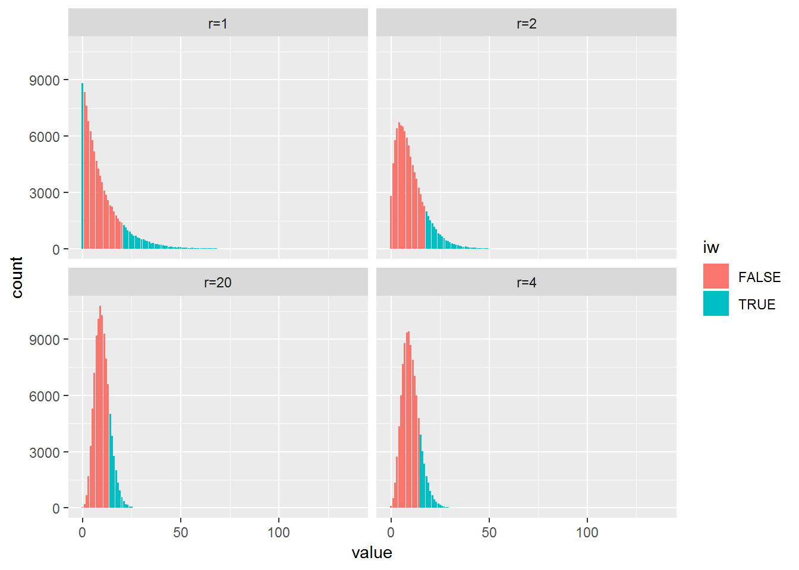
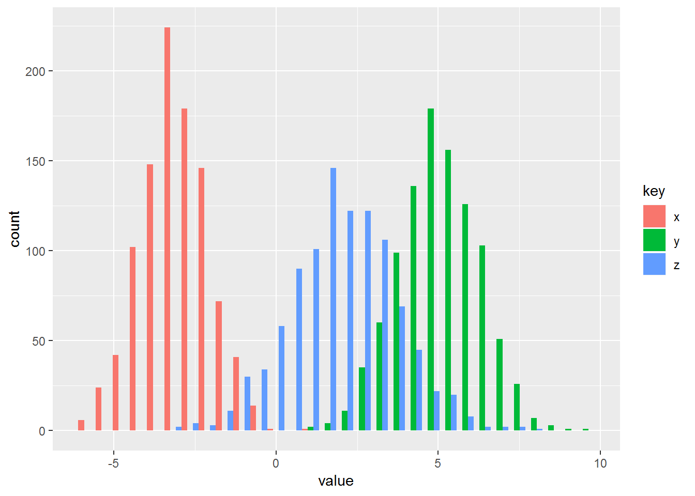

Chapter 9 Alternative representation of distributions
This chapter deals with multivariate random variables.
The students are expected to acquire the following knowledge:
Theoretical
- Probability generating functions.
- Moment generating functions.
R
- ?
9.1 Probability generating functions (PGFs)
Exercise 9.1 Show that the sum of independent Poisson random variables is itself a Poisson random variable. R: Let \(X\) be a sum of three Poisson distributions with \(\lambda_i \in {2, 5.2, 10}\). Take 1000 samples and plot the three distributions and the sum. Then take 1000 samples from the theoretical distribution of \(X\) and compare them to the sum.
Solution. Let \(X_i \sim \text{Poisson}(\lambda_i)\) for \(i = 1,...,n\), and let \(X = \sum_{i=1}^n X_i\). \[\begin{align} \alpha_X(t) &= \prod_{i=1}^n \alpha_{X_i}(t) \\ &= \prod_{i=1}^n \bigg( \sum_{j=0}^\infty t^j \frac{\lambda_i^j e^{-\lambda_i}}{j!} \bigg) \\ &= \prod_{i=1}^n \bigg( e^{-\lambda_i} \sum_{j=0}^\infty \frac{(t\lambda_i)^j }{j!} \bigg) \\ &= \prod_{i=1}^n \bigg( e^{-\lambda_i} e^{t \lambda_i} \bigg) & \text{power series} \\ &= \prod_{i=1}^n \bigg( e^{\lambda_i(t - 1)} \bigg) \\ &= e^{\sum_{i=1}^n \lambda_i(t - 1)} \\ &= e^{t \sum_{i=1}^n \lambda_i - \sum_{i=1}^n \lambda_i} \\ &= e^{-\sum_{i=1}^n \lambda_i} \sum_{j=0}^\infty \frac{(t \sum_{i=1}^n \lambda_i)^j}{j!}\\ &= \sum_{j=0}^\infty \frac{e^{-\sum_{i=1}^n \lambda_i} (t \sum_{i=1}^n \lambda_i)^j}{j!}\\ \end{align}\] The last term is the PGF of a Poisson random variable with parameter \(\sum_{i=1}^n \lambda_i\). Because the PGF is unique, \(X\) is a Poisson random variable.
set.seed(1)
library(tidyr)
nsamps <- 1000
samps <- matrix(data = NA, nrow = nsamps, ncol = 4)
samps[ ,1] <- rpois(nsamps, 2)
samps[ ,2] <- rpois(nsamps, 5.2)
samps[ ,3] <- rpois(nsamps, 10)
samps[ ,4] <- samps[ ,1] + samps[ ,2] + samps[ ,3]
colnames(samps) <- c(2, 2.5, 10, "sum")
gsamps <- as_tibble(samps)
gsamps <- gather(gsamps, key = "dist", value = "value")
ggplot(gsamps, aes(x = value)) +
geom_bar() +
facet_wrap(~ dist)
samps <- cbind(samps, "theoretical" = rpois(nsamps, 2 + 5.2 + 10))
gsamps <- as_tibble(samps[ ,4:5])
gsamps <- gather(gsamps, key = "dist", value = "value")
ggplot(gsamps, aes(x = value, fill = dist)) +
geom_bar(position = "dodge")
Exercise 9.2 Find the expected value and variance of the negative binomial distribution. Hint: Find the Taylor series of \((1 - y)^{-r}\) at point 0.
Solution. Let \(X \sim \text{NB}(r, p)\). \[\begin{align} \alpha_X(t) &= E[t^X] \\ &= \sum_{j=0}^\infty t^j \binom{j + r - 1}{j} (1 - p)^r p^j \\ &= (1 - p)^r \sum_{j=0}^\infty \binom{j + r - 1}{j} (tp)^j \\ &= (1 - p)^r \sum_{j=0}^\infty \frac{(j + r - 1)(j + r - 2)...r}{j!} (tp)^j. \\ \end{align}\] Let us look at the Taylor series of \((1 - y)^{-r}\) at 0 \[\begin{align} (1 - y)^{-r} = &1 + \frac{-r(-1)}{1!}y + \frac{-r(-r - 1)(-1)^2}{2!}y^2 + \\ &\frac{-r(-r - 1)(-r - 2)(-1)^3}{3!}y^3 + ... \\ \end{align}\] How does the \(k\)-th term look like? We have \(k\) derivatives of our function so \[\begin{align} \frac{d^k}{d^k y} (1 - y)^{-r} &= \frac{-r(-r - 1)...(-r - k + 1)(-1)^k}{k!}y^k \\ &= \frac{r(r + 1)...(r + k - 1)}{k!}y^k. \end{align}\] We observe that this equals to the \(j\)-th term in the sum of NB PGF. Therefore \[\begin{align} \alpha_X(t) &= (1 - p)^r (1 - tp)^{-r} \\ &= \Big(\frac{1 - p}{1 - tp}\Big)^r \end{align}\] To find the expected value, we need to differentiate \[\begin{align} \frac{d}{dt} \Big(\frac{1 - p}{1 - tp}\Big)^r &= r \Big(\frac{1 - p}{1 - tp}\Big)^{r-1} \frac{d}{dt} \frac{1 - p}{1 - tp} \\ &= r \Big(\frac{1 - p}{1 - tp}\Big)^{r-1} \frac{p(1 - p)}{(1 - tp)^2}. \\ \end{align}\] Evaluating this at 1, we get: \[\begin{align} E[X] = \frac{rp}{1 - p}. \end{align}\]
For the variance we need the second derivative. \[\begin{align} \frac{d^2}{d^2t} \Big(\frac{1 - p}{1 - tp}\Big)^r &= \frac{p^2 r (r + 1) (\frac{1 - p}{1 - tp})^r}{(tp - 1)^2} \end{align}\]
Evaluating this at 1 and inserting the first derivatives, we get: \[\begin{align} Var[X] &= \frac{d^2}{dt^2} \alpha_X(1) + \frac{d}{dt}\alpha_X(1) - \Big(\frac{d}{dt}\alpha_X(t) \Big)^2 \\ &= \frac{p^2 r (r + 1)}{(1 - p)^2} + \frac{rp}{1 - p} - \frac{r^2p^2}{(1 - p)^2} \\ &= \frac{rp}{(1 - p)^2}. \end{align}\]
library(tidyr)
set.seed(1)
nsamps <- 100000
find_p <- function (mu, r) {
return (10 / (r + 10))
}
r <- c(1,2,10,20)
p <- find_p(10, r)
sigma <- rep(sqrt(p*r / (1 - p)^2), each = nsamps)
samps <- cbind("r=1" = rnbinom(nsamps, size = r[1], prob = 1 - p[1]),
"r=2" = rnbinom(nsamps, size = r[2], prob = 1 - p[2]),
"r=4" = rnbinom(nsamps, size = r[3], prob = 1 - p[3]),
"r=20" = rnbinom(nsamps, size = r[4], prob = 1 - p[4]))
gsamps <- gather(as.data.frame(samps))
iw <- (gsamps$value > sigma + 10) | (gsamps$value < sigma - 10)
ggplot(gsamps, aes(x = value, fill = iw)) +
geom_bar() +
# geom_density() +
facet_wrap(~ key)
9.2 Moment generating functions (MGFs)
Exercise 7.4 Find the variance of the geometric distribution.
Exercise 9.3 Find the distribution of sum of two normal random variables \(X\) and \(Y\), by comparing \(M_{X+Y}(t)\) to \(M_X(t)\). R: To illustrate the result draw random samples from N\((-3, 1)\) and N\((5, 1.2)\) and calculate the empirical mean and variance of \(X+Y\). Plot all three histograms in one plot.
Solution. Let \(X \sim \text{N}(\mu_X, 1)\) and \(Y \sim \text{N}(\mu_Y, 1)\). The MGF of the sum is \[\begin{align} M_{X+Y}(t) &= M_X(t) M_Y(t). \end{align}\] Let us calculate \(M_X(t)\), the MGF for \(Y\) then follows analogously. \[\begin{align} M_X(t) &= \int_{-\infty}^\infty e^{tx} \frac{1}{\sqrt{2 \pi \sigma_X^2}} e^{-\frac{(x - mu_X)^2}{2\sigma_X^2}} dx \\ &= \int_{-\infty}^\infty \frac{1}{\sqrt{2 \pi \sigma_X^2}} e^{-\frac{(x - mu_X)^2 - 2\sigma_X tx}{2\sigma_X^2}} dx \\ &= \int_{-\infty}^\infty \frac{1}{\sqrt{2 \pi \sigma_X^2}} e^{-\frac{x^2 - 2\mu_X x + \mu_X^2 - 2\sigma_X tx}{2\sigma_X^2}} dx \\ &= \int_{-\infty}^\infty \frac{1}{\sqrt{2 \pi \sigma_X^2}} e^{-\frac{(x - (\mu_X + 2\sigma_X^2 t))^2 + \mu_X^2 - (\mu_X + 2\sigma_X^2 t)^2}{2\sigma_X^2}} dx & \text{complete the square}\\ &= e^{-\frac{\mu_X^2 - (\mu_X + 2\sigma_X^2 t)^2}{2\sigma_X^2}} \int_{-\infty}^\infty \frac{1}{\sqrt{2 \pi \sigma_X^2}} e^{-\frac{(x - (\mu_X + 2\sigma_X^2 t))^2}{2\sigma_X^2}} dx & \\ &= e^{-\frac{\mu_X^2 - (\mu_X + 2\sigma_X^2 t)^2}{2\sigma_X^2}} & \text{normal PDF} \\ &= e^{-\frac{\mu_X^2 - \mu_X^2 - 2 \mu_X \sigma_X^2 t - 4 \sigma_X^4 t^2}{2\sigma_X^2}} \\ &= e^{2\sigma_X^2 t^2 + 2\mu_X t}. \\ \end{align}\] The MGF of the sum is then \[\begin{align} M_{X+Y}(t) &= e^{2\sigma_X^2 t^2 + 2\mu_X t} e^{2\sigma_Y^2 t^2 + 2\mu_Y t} \\ &= e^{2t^2(\sigma_X^2 + \sigma_Y^2) + 2t(\mu_X + \mu_Y)}. \end{align}\] By comparing \(M_{X+Y}(t)\) and \(M_X(t)\) we observe that both have two terms. The first is \(2t^2\) multiplied by the variance, and the second is \(2t\) multiplied by the mean. Since MGFs are unique, we conclude that \(Z = X + Y \sim \text{N}(\mu_X + \mu_Y, \sigma_X^2 + \sigma_Y^2)\).
library(tidyr)
library(ggplot2)
set.seed(1)
nsamps <- 1000
x <- rnorm(nsamps, -3, 1)
y <- rnorm(nsamps, 5, 1.2)
z <- x + y
mean(z)## [1] 1.968838var(z)## [1] 2.645034df <- data.frame(x = x, y = y, z = z) %>%
gather()
ggplot(df, aes(x = value, fill = key)) +
geom_histogram(position = "dodge")